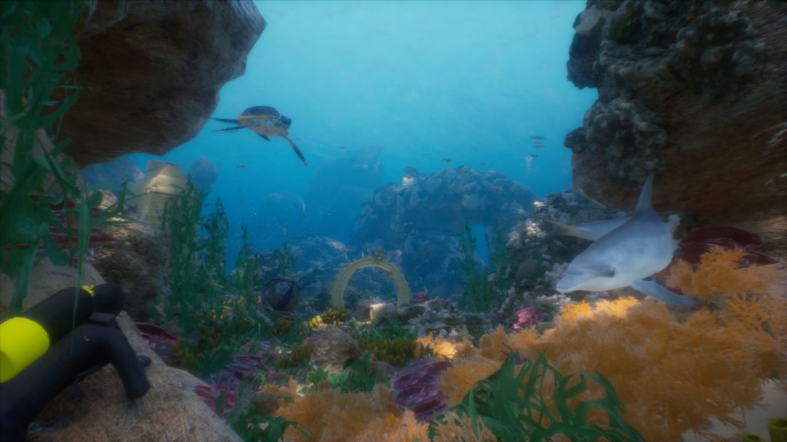
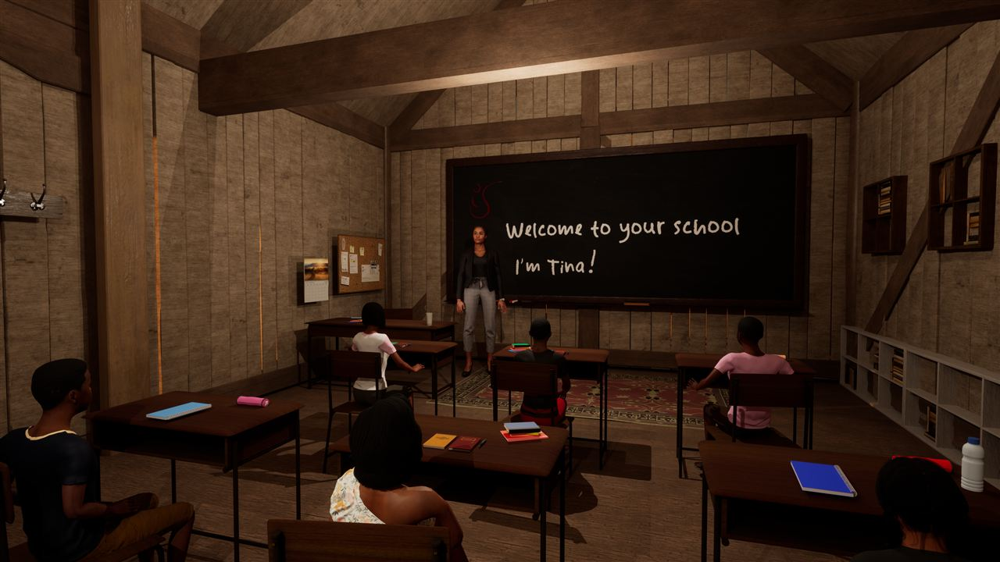
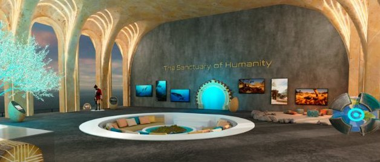
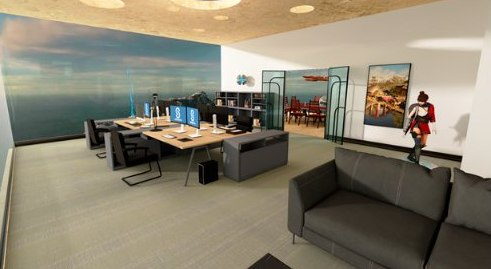
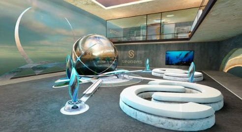
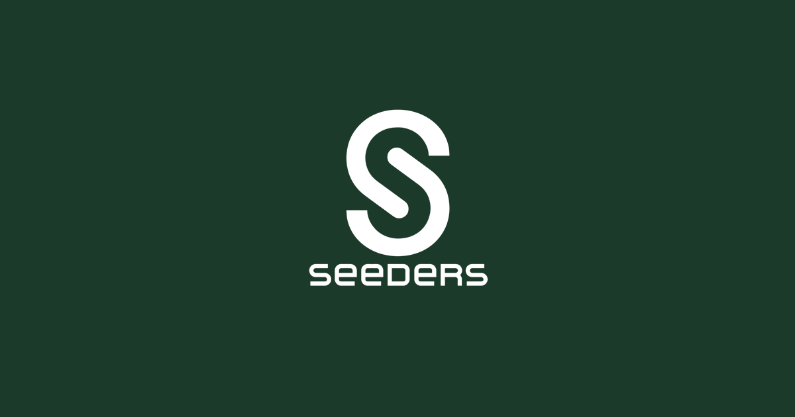

Mission 1
Le site vitrine
Refondre entièrement le site de l’entreprise : design, intégration, sécurité, accessibilité, SEO et mise en ligne en trois langues.

Rapport de stage · 2 juin → 18 août 2026
Par Nils Folschveiller. Un stage au cœur d’une start‑up tech à impact : refonte complète du site vitrine, création d’agents IA pour la recherche d’investisseurs et l’analyse de marché, et une formation accélérée à l’intelligence artificielle.
Le stage
Du 2 juin au 18 août 2026, j’ai rejoint Seeders SAS, une jeune entreprise française qui construit l’infrastructure du don caritatif pour l’industrie du jeu vidéo. Ma maître de stage : Olivia Bénazéraf, co‑fondatrice et Chief Impact Officer.
Une start‑up en phase d’amorçage n’a ni grande équipe, ni process figés : chacun touche à tout. C’est exactement ce qui rend ce type de stage formateur — on voit passer, en quelques semaines, tous les chantiers d’une entreprise tech : le produit, l’image, la levée de fonds, l’étude de marché et les outils internes.
Mes missions se sont organisées autour de trois axes complémentaires : donner à Seeders un site vitrine professionnel et sécurisé, outiller la recherche d’investisseurs et l’analyse de marché avec des agents IA, et me former en continu aux outils d’intelligence artificielle qui rendaient tout cela possible.
Mission 1
Refondre entièrement le site de l’entreprise : design, intégration, sécurité, accessibilité, SEO et mise en ligne en trois langues.
Mission 2
Concevoir des agents autonomes qui recherchent et qualifient des investisseurs potentiels et analysent le marché des studios de jeux vidéo.
Mission 3
Suivre les cours de l’Anthropic Academy, documenter les outils testés et construire une base de connaissances IA pour l’équipe.
Découverte et refonte du site. Immersion dans l’entreprise, analyse de l’ancien site (construit sur Readymag, chargé de traceurs publicitaires), puis reconstruction complète : design system, intégration, sécurisation et première mise en ligne.
Site trilingue et premiers agents. Traduction du site en français et en espagnol, ajout du trailer vidéo et du SEO avancé. En parallèle : formation intensive à Claude, et conception des premiers agents de recherche d’investisseurs.
Industrialisation. Les agents tournent seuls, deux fois par semaine : lots de 100 cibles investisseurs et 100 studios analysés, scorés et livrés prêts à valider. Documentation, bilan et transmission à l’équipe.
L’entreprise
Seeders construit l’infrastructure où jouer crée de l’impact : une API qui relie nativement n’importe quelle action ou achat dans un jeu vidéo à un don réel, routé vers des ONG vérifiées. Son ambition : devenir le « Stripe du don » de l’industrie du jeu.
Le constat de départ est simple : les joueurs veulent donner (67 % le feraient si c’était simple), mais aucun système universel n’existe. Les studios n’ont pas de solution clé en main conforme, et les ONG n’ont pas d’accès natif aux 3,4 milliards de joueurs dans le monde.
Seeders résout cette friction avec une API légère et des SDK pour Unity et Unreal : arrondir un achat in‑game au profit d’une ONG, acheter un objet virtuel solidaire, participer à un défi caritatif — sans jamais quitter le jeu. Le marché est immense : 200 Md€ pour le jeu vidéo en 2026, 2 100 Md€ pour la philanthropie.
Société tech à but lucratif
Développe l’API, les SDK et les tableaux de bord — modèle SaaS.
À but non lucratif
Route 100 % des dons vers les ONG, avec audit et conformité.
Le joueur arrondit ses achats in‑game : 1 ou 5 € reversés à une ONG, en un clic.
Des objets virtuels (skins, emotes) dont un pourcentage des revenus est automatiquement reversé à une cause.
Des événements limités dans le temps où les joueurs collectent ensemble des fonds pour des causes réelles.

90 % de chaque don parvient à la cause — tracé, vérifié et audité.





Pendant mon stage, Seeders posait ses fondations : développement du MVP de l’API, premiers partenariats ONG, et préparation de sa première levée de fonds — le contexte idéal pour des missions variées et concrètes.
Mission 1
L’ancien site, construit sur Readymag, avait une mise en page figée, non responsive, et chargeait Google Analytics, GTM et le pixel TikTok. Objectif : un site moderne, rapide, accessible — et irréprochable sur la confidentialité.
Audit de l’ancien site : structure des contenus, points forts du message, mais aussi défauts — mise en page absolue non adaptable au mobile, dépendance à une plateforme tierce, traceurs publicitaires.
Textes, logo et images extraits du site d’origine, puis réorganisés en sections claires : entreprise, impact, API, équipe, contacts. Le fond ne change pas, la forme si.
Une palette nature (vert forêt, crème, teal), deux typographies auto‑hébergées (Jost et Libre Caslon Text), et des variables CSS centralisées : chaque couleur, rayon ou ombre se change à un seul endroit.
Pas de framework, pas de dépendance : trois fichiers écrits à la main. Résultat : un site d’environ 1 Mo, fluide sur mobile comme sur PC, avec animations respectant prefers-reduced-motion.
Politique de sécurité stricte (CSP default-src 'none'), HTTPS forcé, zéro cookie, zéro traceur, zéro requête vers des serveurs tiers : tout est hébergé par le site lui‑même. Conforme RGPD par conception.
Trois langues (anglais, français, espagnol) avec sélecteur intégré, données structurées JSON‑LD, sitemap, Open Graph et FAQ — pour les moteurs de recherche comme pour les IA qui explorent le web.

Le site final est en ligne sur seeders.app
Mission 2
Un chatbot attend qu’on lui pose une question. Un agent IA agit : il se déclenche seul, cherche, trie, vérifie et rend compte. J’en ai construit deux pour Seeders, avec Claude — l’un pour trouver des investisseurs, l’autre pour analyser le marché des studios.
Recherche d’investisseurs
Deux fois par semaine, l’agent identifie des investisseurs early‑stage alignés avec la thèse de Seeders (impact, gaming, SaaS B2B, tech‑for‑good) à partir de sources publiques : sites de fonds, presse, bases spécialisées.
Chaque cible est notée sur une grille de 100 points (stade, secteur, thèse, ticket, valeur stratégique…), dédoublonnée contre la base existante, et livrée avec le bon interlocuteur à contacter et un angle d’approche documenté.
Analyse de marché
Le même principe, appliqué à la demande : cartographier les studios de jeux européens susceptibles d’intégrer Seeders. Critère central : leur ADN impact — partenariats ONG, campagnes caritatives passées, engagements environnementaux.
L’agent vérifie aussi la monétisation en place, la faisabilité technique (Unity, Unreal), l’audience — et produit une shortlist de studios pilotes potentiels pour le lancement du MVP.
La partie la plus importante du travail n’est pas ce que l’agent fait, mais ce qu’il n’a pas le droit de faire.
Résultat : un travail de sourcing qui occupait des journées entières arrive désormais chaque lundi et mercredi, déjà trié, scoré et documenté — l’humain ne fait plus que la partie à forte valeur : juger et décider.
Méthode
La démarche que j’ai apprise et appliquée — huit étapes valables quel que soit l’outil, puis deux façons concrètes de les mettre en œuvre : Claude et N8N.
Un cas d’usage unique et clair, avec des critères de succès. Un agent qui veut tout faire ne fait rien de bien.
Le « cerveau » de l’agent : son rôle, ses instructions, ses limites, des exemples. C’est l’étape la plus importante — un mauvais prompt rend inutile le meilleur modèle.
Coût, vitesse, taille de contexte : le choix dépend du cas d’usage, pas de la mode.
C’est ce qui transforme un chatbot en agent : accès au web, aux fichiers, à la messagerie, au tableur — via des connecteurs (MCP) ou des API.
Des fichiers de contexte que l’agent relit à chaque exécution : la thèse de l’entreprise, les critères, l’historique — pour ne pas repartir de zéro.
Quand l’agent se déclenche‑t‑il ? Dans quel ordre enchaîne‑t‑il ses tâches ? Que fait‑il en cas d’échec ? La planification fait partie du design.
Ce que l’agent ne doit jamais faire (envoyer, supprimer, inventer), et où l’humain reprend la main. À définir avant la mise en route, pas après.
Relire les premières exécutions, corriger le prompt, resserrer les critères. Un agent s’améliore comme on forme un nouveau collègue : par le feedback.
L’agent qui raisonne
Tout se décrit en langage naturel, sans écrire de code :
La tuyauterie qui relie tout
Un éditeur visuel de workflows où l’on branche des blocs :
En résumé : Claude fournit l’intelligence — comprendre, chercher, rédiger, juger — et N8N fournit la mécanique — déclencher, relier les services entre eux, faire circuler les données. Les projets les plus robustes combinent les deux : un workflow N8N qui appelle Claude au bon moment, avec un humain dans la boucle.
Bilan
Trois apprentissages qui se renforcent : la pratique réelle de l’IA, la rigueur du web professionnel, et la compréhension d’une entreprise tech de l’intérieur.
Compétence 1
Prompt engineering, agents, connecteurs MCP, planification : j’ai suivi les cours de l’Anthropic Academy (Claude 101, Claude Code, MCP, Agent Skills, AI Fluency…) et appliqué chaque notion directement sur de vrais besoins de l’entreprise.
Compétence 2
Design system, accessibilité, sécurité (CSP, HTTPS, RGPD), performance, SEO multilingue : un site n’est pas qu’une maquette — c’est un produit qui doit tenir en production.
Compétence 3
Levée de fonds, analyse de marché, conformité, go‑to‑market : en outillant ces chantiers, j’ai compris comment une jeune entreprise tech se structure, convainc des investisseurs et trouve ses premiers clients.
La compétence clé que je retiens n’est pas de tout faire soi‑même, ni de tout déléguer à l’IA : c’est de savoir décrire précisément un besoin, outiller une IA pour y répondre, vérifier ses résultats — et garder l’humain dans la boucle pour chaque décision.
Décrire · Outiller · Vérifier · Décider
Merci à Olivia Bénazéraf, ma maître de stage, pour sa confiance et l’autonomie accordée sur des sujets aussi variés, et à toute l’équipe Seeders pour son accueil. Ce stage m’a donné l’envie — et les outils — de continuer à construire avec l’IA.
Me contacterContact
Stagiaire — site web & agents IA
nils.flch@icloud.comEntreprise d’accueil — Olivia Bénazéraf, maître de stage, Chief Impact Officer
olivia@seeders.online seeders.app